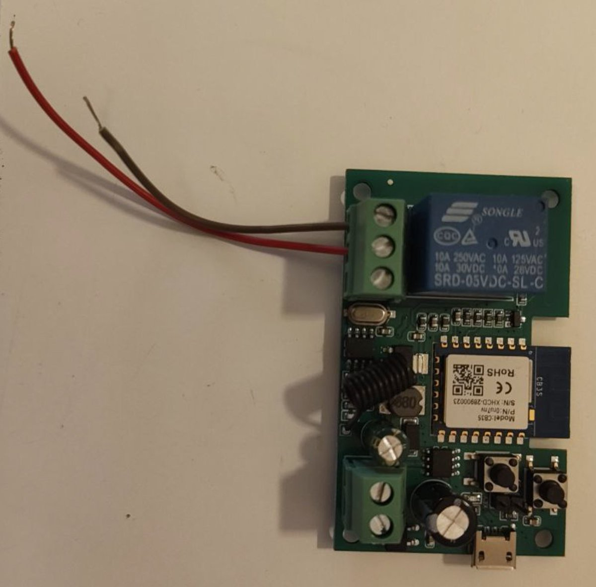
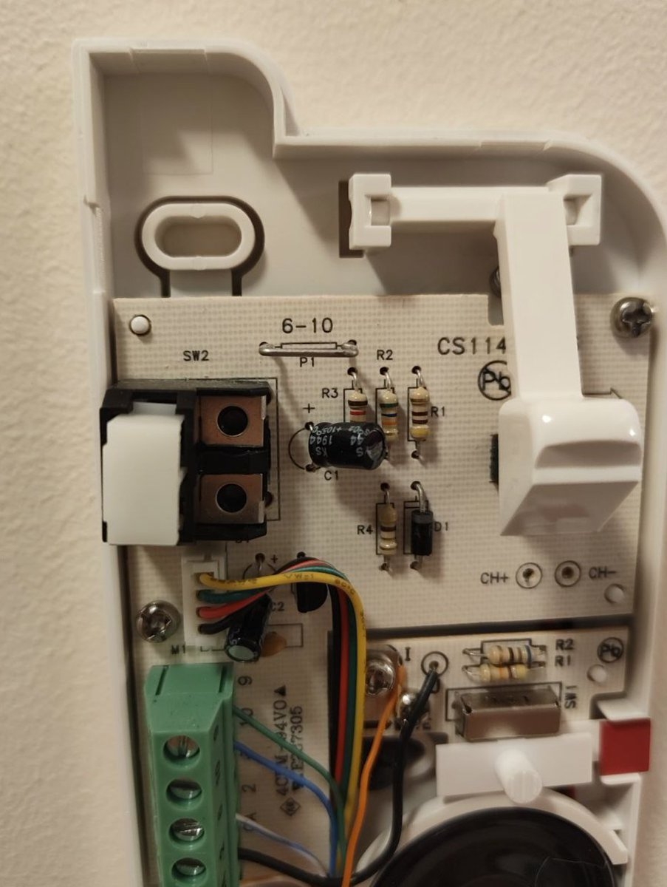
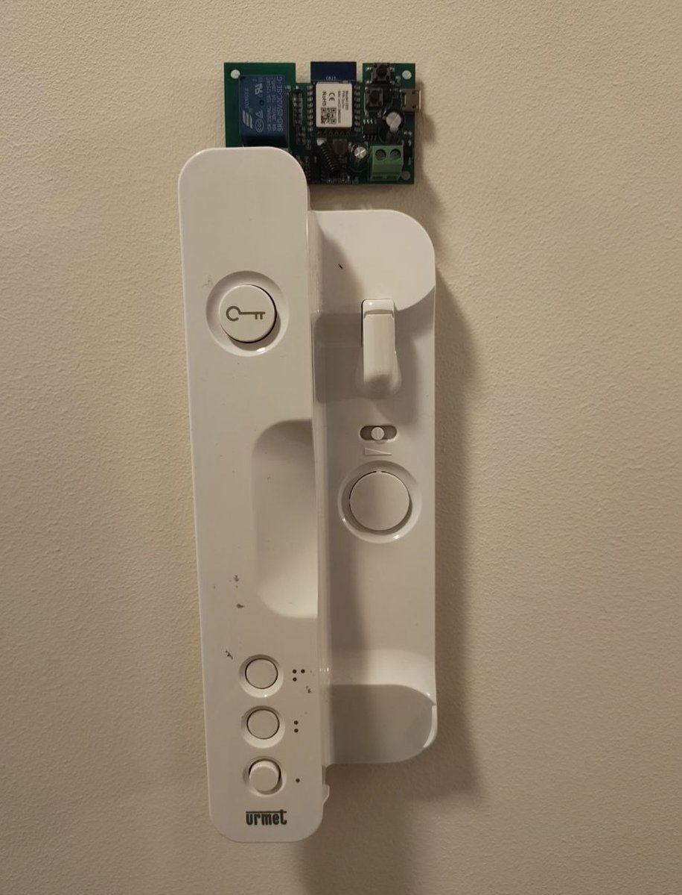

Backstory
This is my old intercom. It works just fine, except every now and then I need to open the door for delivery people when I'm out. I also don't feel like replacing this perfectly functional piece of hardware with a new fancy WiFi intercom. Let's sprinkle new features onto the old one instead!

Hardware requirements
This is a $8 WiFi relay. Relay is basically an electrically controlled "button" that can open a close a circuit. Then, get 2 jumper cables that cost approx. $0 and attach them to "normally open" and "ground" ports. "Normally open" means that activating the relay will close the circuit, which is how my intercom operates.
Intercom internals
Let's open this functional yet ultra-dull white case. It already looks way less boring now, doesn't it. We're going to target the "buzz in" button, or more specifically the metal plates next to it.

The right circuit
These ones. Opening the door is done just by closing this little circuit, that also happens to have slots for securing the cables with bolts. Coincidence? Yeah, likely, probably you can just extend this intercom with another button or something.
Installation
As every responsible father, I have a jar full of spare bolts and screws of all shapes and sizes. Let's just connect the cables where they belong. You can figure out where the red one goes with a multimeter, just check which way the current flows when you close the circuit. An extra test is to listen for the buzzer to make sound when you measure. If it does, you're on the right track!

End result
There. Looks so much more æsthetic now. Nothing like a raw-circuit-board theme to brighten up this dull white case.
Bonus: epilepsy check
It also blinds you with a raw red LED every time you open the door remotely! Double stylish. The relay I have is hooked to a @Tuya Smart app, but you can also easily find one that works with local WiFi only.